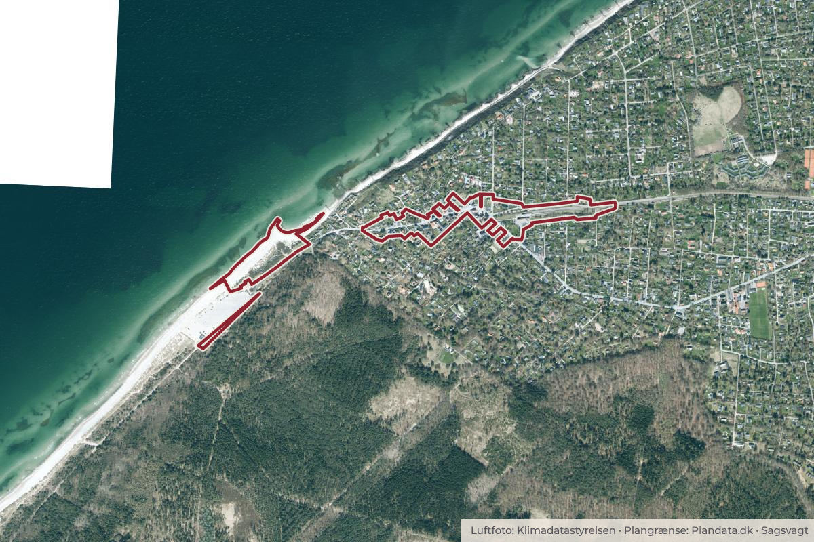

På dagsordenen 24. november, Teknisk Udvalg, Gribskov
Dispensation fra bevarende lokalplan 72.99 Tisvildeleje - taghældning

Kort: © OpenStreetMap-bidragydere. Plangrænse: Plandata.dk, Gribskov Kommune.

Kort fortalt
- Forslaget
- Give afslag på dispensationsansøgningen fra § 7.2 til henholdsvis 20 grader og 30
- Hvem
- Teknisk Udvalg, Gribskov Kommune
- Hvornår
- Tirsdag 24. november 2026
- Status
- På dagsordenen. Sagen behandles på mødet.
Er noget forkert her? Skriv til os
Hvad kan du gøre?
- Skriv til politikerne
- Udvalgets møder er lukkede, men du kan skrive til medlemmerne før mødet tirsdag 24. november 2026. Du finder dem på gribskov.dk.
Læs hele sagen Kommunens egen tekst
Indstilling
ADMINISTRATIONEN INDSTILLER TIL TEKNISK UDVALG AT BESLUTTE:
1. at give afslag på dispensationsansøgningen fra § 7.2 til henholdsvis 20 grader og 30
grader taghældning.
Sagsfremstilling
Ansøger ønsker at opføre et 170 m² enfamiliehus primært med 30° taghældning og med en lille
del med 20° taghældning (bilag 1).
I den forbindelse er der søgt om dispensation fra den fremhævede del af bevarende lokalplan
72.99, § 7.2 i delområdet Strøget:
”Ny bebyggelse må ikke opføres med mere end én etage med udnyttet tagetage. For
eksisterende bebyggelse i op til 2½ etage kan Byrådet dog tillade genopførelse.
Bebyggelsesprocenten på den enkelte grund må ikke overstige 40.
Bygningshøjden må ikke overstige 8,5 meter, og ydervæggens højde, bortset fra gavle, skal
være mindst 2 meter og højst 3,5 meter.
Langs Hovedgaden kan bebyggelse placeres i vejskel, og side- og baghuse kan opføres i
nabo- og bagskel. Forhuses husdybde må ikke overstige 10 meter. Bygninger der
sammenbygges over naboskel skal fremtræde som
selvstændige bygninger for hver ejendom.
Tage skal udføres med en hældning på mindst 40 grader. Udhuse, garager og lignende
småbygninger kan dog udføres med anden hældning.”
Lokalplan 72.99 fra 2001
Formålsbestemmelsen:
§1 Lokalplanens formål
Lokalplanens formål er:
at bevare den unikke landskabelige sammenhæng i Tisvildeleje mellem byen og
stranden,
at bevare og styrke den rekreative anvendelse af strandområdet under hensyn til
områdets biologiske og
landskabsmæssige bevaringsinteresser.
at bevare det kulturhistoriske miljø omkring Lejet og stejlepladsen under hensyntagen til
en nutidig anvendelse,
at fastlægge retningslinier for forbedring af det fysiske miljø på Hovedgaden og omkring
Stationen,
at ajourføre plangrundlaget, herunder at overføre enkelte ejendomme fra
sommerhusområde til byzone.
Anvendelsesbestemmelsen:
3.2 STRØGET
Område III må kun anvendes til helårsbeboelse og centerformål, såsom butikker,
pengeinstitutter, kontorer, klinikker, værksteder, restauranter, forlystelser, hoteller, offentlige
formål og lignende.
Indenfor området må den enkelte butiks samlede etageareal (butik, lager og personalerum)
ikke overstige 500 m² for dagligvarebutikker og 250 m² for udvalgsvarebutikker.
Herudover må der indrettes mindre værkstedsvirksomheder, såfremt de har tilknytning til en
butik. Egentlige fremstillingsvirksomheder er ikke tilladt.
I bebyggelse med mere end 1 etage må øverste etage kun anvendes til boliger.
Lignende sager
Ansøger har i dispensationsansøgningen fremhævet nedenstående adresser, som undersøges
nærmere:
Vængevej 8A
Tilladelse 06.08.2019.
Tilladelsen omfatter tilbygning på 37 m² med fladt samt tagterrasse på 20 m².
Tilladelsen nævner ikke Lokalplan 72.99 eller noget om taghældning, så det vurderes man ikke
har forholdt sig til kravet til taghældning.
Olskærvej 1
Tilladelse 02.12.2020.
Tilladelsen omfatter opførelse af 79 m² bygning til Café/butik/showroom med tilhørende toilet
med separat indgang.
Der meddeles dispensation fra Lokalplan 72.99 § 8.2 til opførelse af bygning med facader af
pladebeklædning i en pudset grøn-grå farve, hvor lokalplanen foreskriver murede
teglstensvægge evt. vandskurede eller pudsede behandlet med gul eller hvid farve.
Tilladelsen nævner ikke § 7.2 i lokalplan 72.99 eller noget om taghældning, så det vurderes
man ikke har forholdt til krav til taghældning.
Hulvej 6
Tilladelse 07.10.2020.
Tilladelsen omfatter tilbygning af 15 m² og ny tagkonstruktion samt facaderenovering
Der gives dispensation til at overskride facadehøjden med 1,5 m og anvende en mindre
taghældning end 40 grader (§ 7.2 – red) samt at anvende en lettere facadeløsning.
Det fremgår dog af dagsordenspunkt 194 i Udvikling, By og Land af 15. september 2020
Bygningens oprindelige taghældning var på 24 grader og dermed mindre end tilladt efter
lokalplanen, som jo er vedtaget efterfølgende. Den nye tagkonstruktion har samme hældning
som den oprindelige.
Følgende taler for en dispensation:
Bygningen placeres bag bebyggelsen ud mod Hovedgaden, og tagets lavere hældning vil
derfor ikke umiddelbart være synlig fra Hovedgaden.
Ejendommen har selvstændig vejadgang fra Vængevej bag Hovedgaden, idet den blev
udstykket i 2019.
Udvalget for Klima, Teknik og Miljø meddelte den 23. september 2025 dispensation fra
lokalplanens §§ 8.2 og 8.5 til opsætning af solceller på naboejendommen Vængevej 8A
med samme argumentation.
Det kan diskuteres, hvor mange bygninger i lokalplanområdet der inden lokalplanens
vedtagelse i 2001 havde en taghældning på omkring 30° eller under 40°.
Formålet med lokalplanen er (administrationens understregning) at fastlægge
retningslinjer for forbedring af det fysiske miljø på Hovedgaden og omkring Stationen, og
det kan overvejes, i hvilket omfang Vængevej 8B indgår i dette miljø.
Følgende taler mod en dispensation:
Administrationen vurderer, at de førnævnte tilladelser, som er meddelt uden vurdering af
§ 7.2, må betragtes som fejl og derfor ikke danner præcedens.
Administrationen vurderer, at Hulvej 6 ikke er sammenlignelig, da sagen vedrører
udskiftning af et eksisterende tag.
Administrationen vurderer, at en dispensation til taghældninger på henholdsvis 20° og
30° kan åbne for tilsvarende ansøgninger med samme taghældninger samt ansøgninger
om dispensation til endnu lavere taghældninger (uønsket præcedens).
Administrationens vurdering
Administrationen vurderer, at:
1. det er positivt, at ejendommen er placeret bag eksisterende bebyggelse og ikke ligger på
Hovedgaden.
2. der er risiko for at skabe en uønsket præcedens for tagudformningen i lokalplanområdet.
Administrationen vurderer på det foreliggende grundlag, at hensynet til risikoen for uønsket
præcedens vægter lidt tungere end hensynet til ejendommens placering.
Da administrationen samtidig vurderer, at sagen indeholder særlige forhold, som taler for en
dispensation, beder administrationen udvalget tage stilling til, om administrationen på baggrund
af ovenstående konkrete vurderinger kan meddele dispensation.
Økonomi
Ressourceforbrug i form af arbejdstid for kommunens ansatte finansieres af Teknisk
Udvalgs samlede budgetter.
Lovgrundlag
LBK nr 572 af 29/05/2024 - Bekendtgørelse af lov om planlægning (Planloven) § 19.
Lokalplan 72.99
Høringsperiode og høringsparter
Gribskov Kommune har i perioden 15. oktober 2026 til 29. oktober 2026 partshørt:
Vængevej 10A
Vængevej 10B
Hovedgaden 65A
Hovedgaden 65F
Vængevej 8A
Vængevej 7
Vængevej 14
Disse er partshørt, da nærmeste naboer om udgangspunkt parthøres når der bygges på en
tom grund.
Ansøger/Ejer af Vængevej 8B blev ligeledes partshørt.
Alle modtog kommunens oplæg til et niveauplan efter Bygningsreglementet BR18 samt oplæg
til afslag på dispensationsansøgning.
Der er ikke modtaget indsigelser mod taghældningen, men naboer klager over taghældningen
bundet op på niveauplanet.
Administrationen har kompetencen til udarbejdelse og afgørelsen om niveauplan.
Der er modtaget høringssvar fra
Vængevej 10
Hovedgaden 65A
Vængevej 8A
Vængevej 8B
Vængevej 7
Alle svar er vedlagt dagsordenspunktet.
Kilde: Gribskov Kommune, Teknisk Udvalg, dagsorden fra mødet tirsdag 24. november 2026, punkt 8. Læs den originale sag hos kommunen.